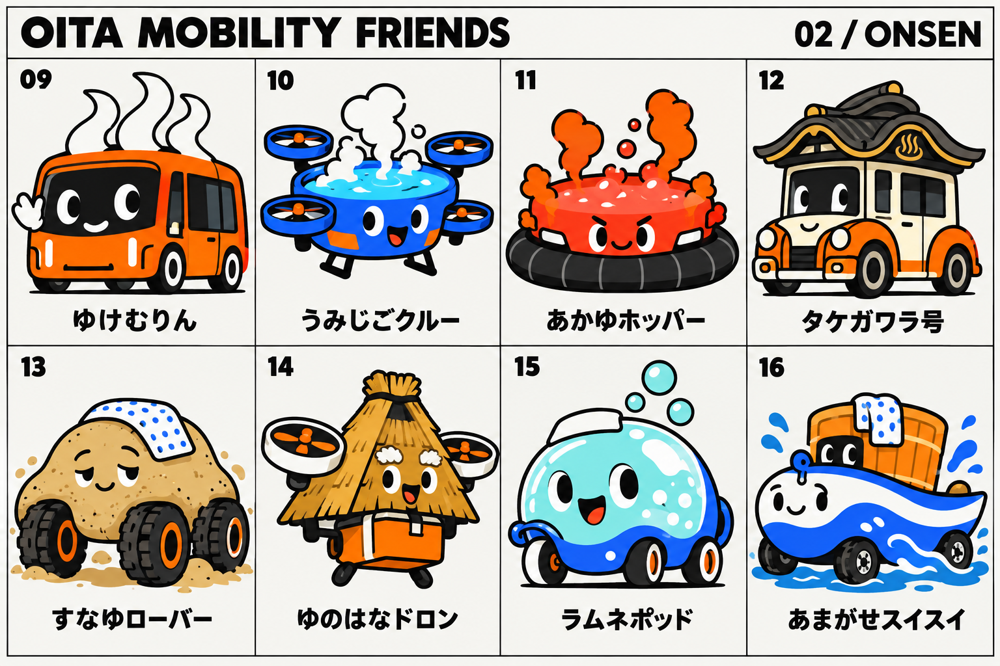
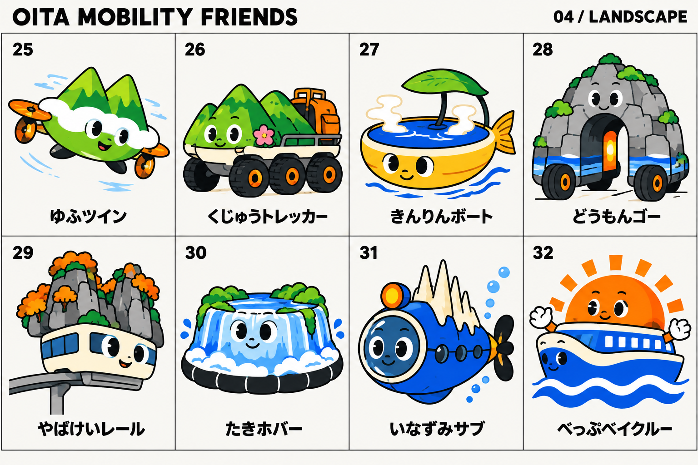
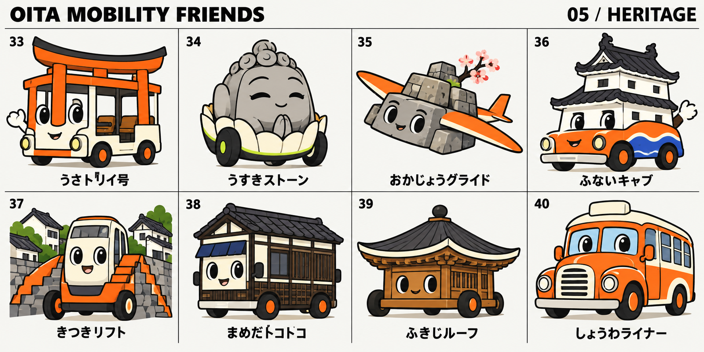
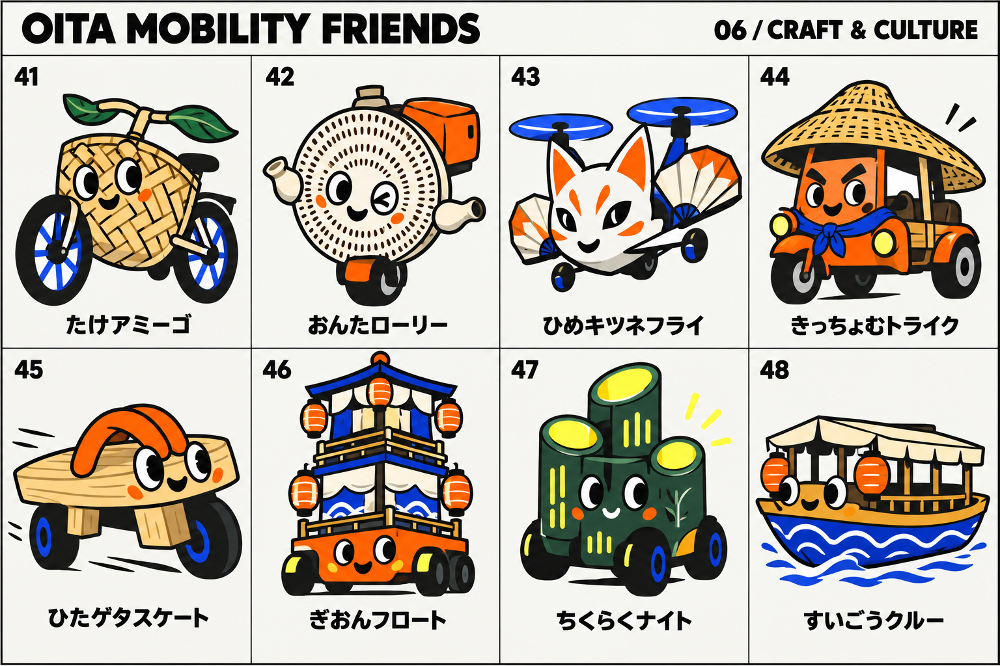
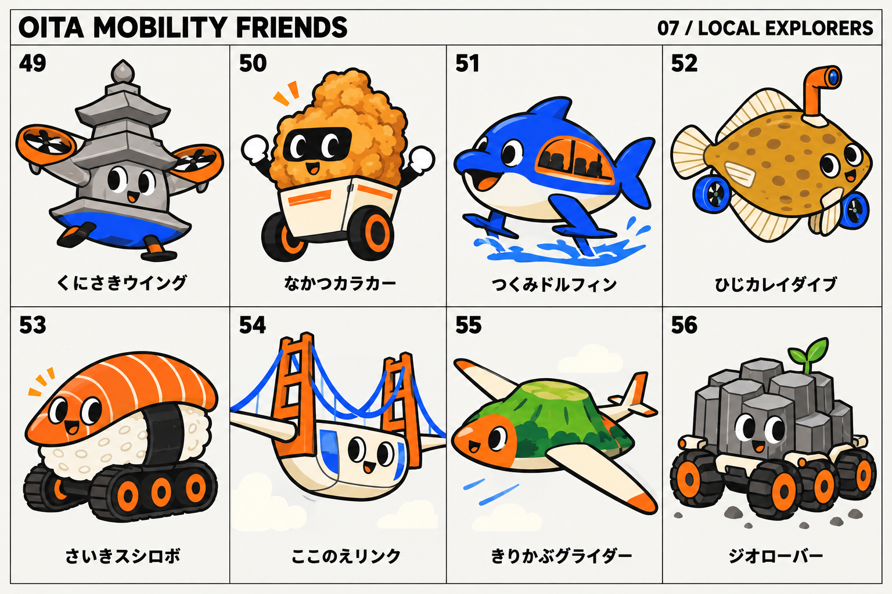
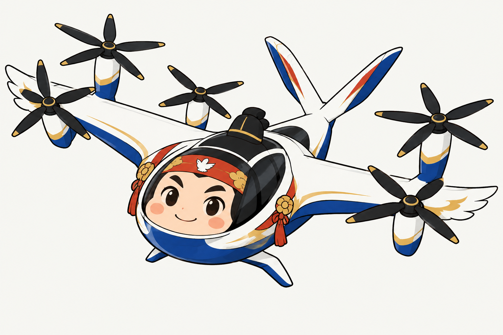
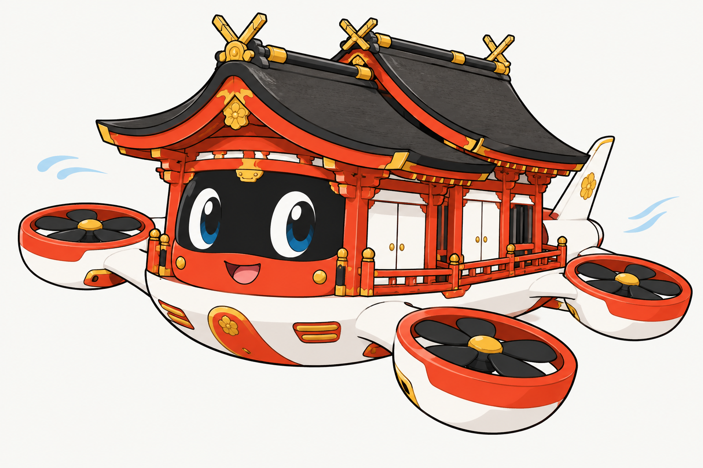
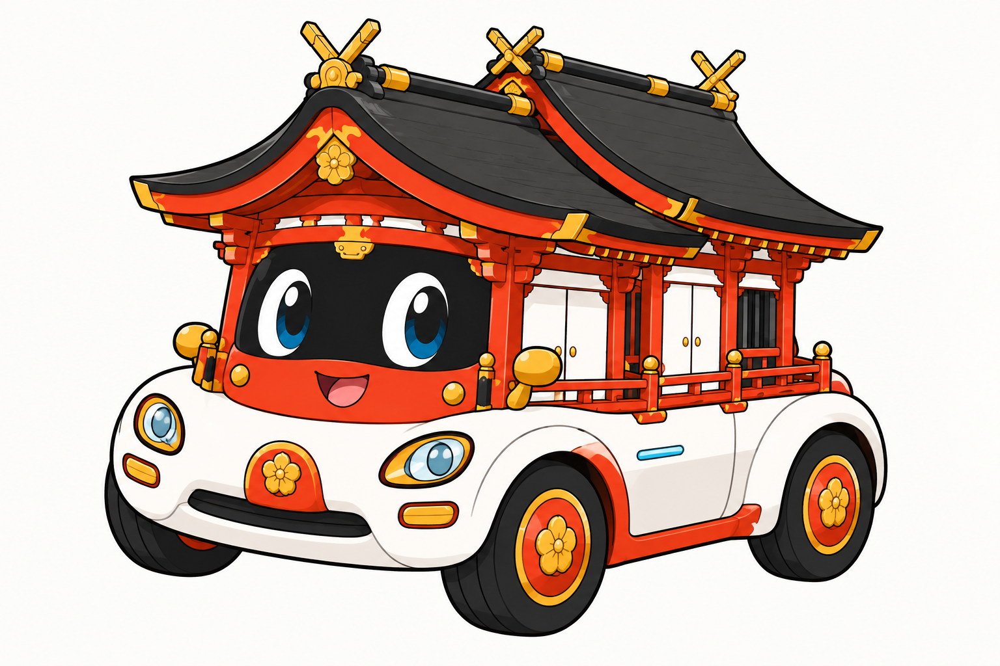
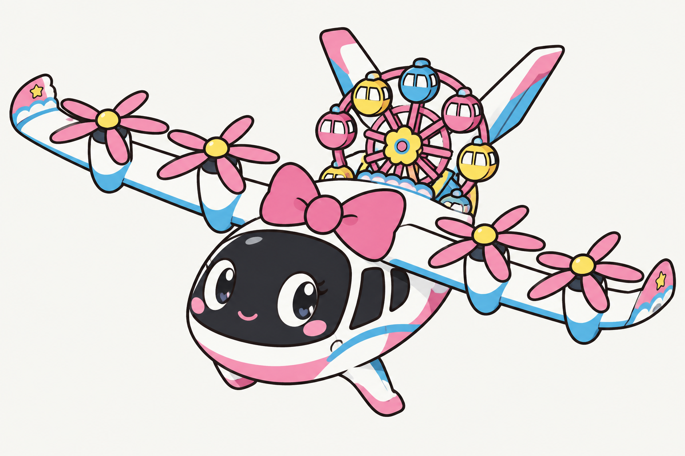

かぼすエア
かぼす
× 空飛ぶモビリティ
丸いかぼすと、葉っぱの翼。
かぼす、温泉、宇佐神宮。
大分の名物・名所・文化と、未来のモビリティから生まれた仲間たち。
62 DESIGNS / 大分の未来を、ちょっと遊ぶ。
シミュレーションで選んだ上位5体 ＋ やせうまスクーター。
実際の人気投票による順位ではありません。選定方法を見る ↓
かぼす
× 空飛ぶモビリティ
丸いかぼすと、葉っぱの翼。
温泉
× 自動運転シャトル
湯けむりと手ぬぐいで、お出迎え。

宇佐神宮の社殿
× e-Palette型シャトル
社殿の屋根と朱色の柱を、箱型の車体に。大きな窓で、みんなを乗せる。
高崎山のニホンザル
× パーソナルモビリティ
親しみのある表情と、身軽な足まわり。

宇佐神宮の鳥居
× e-Palette型シャトル
反り上がる鳥居と黒い輪。まちを案内する、お出迎えのキャラクター。

やせうま
× 電動キックスクーター
幅広い麺を、スクーターの曲線に。
順位にかかわらず掲載する仲間
これは実際の人気投票・アンケートではありません。62案を制作者の主観で採点し、1,000人が1人1票を投じる仮想モデルで比較しました。仮定を変えると順位も変わります。予測や実証済みの人気を示すものではありません。
上位5案をコンソーシアムのキャラクターとして選定。やせうまスクーターは、順位にかかわらず掲載する仲間です。
イラストは創作デザイン、名前は仮称です。実在の機体の設計図ではありません。
宇佐神宮
× 観光電動トラム
朱色の鳥居を、車体のフレームに。
仮想得票 19票 · シミュレーション 10位
八幡様と白鳩の象徴
× 空飛ぶモビリティ
白鳩の翼と、空を飛ぶローター。
仮想得票 7票 · シミュレーション 23位
応神天皇の創作イメージ
× 古代船型の空飛ぶモビリティ
古代の装いと、空に浮かぶ舟。
仮想得票 2票 · シミュレーション 43位
温泉
× 自動運転シャトル
湯けむりと手ぬぐいで、お出迎え。
仮想得票 111票 · シミュレーション 2位
関アジ・関サバ
× 連結型の海上モビリティ
銀のアジと青いサバが、並んで進む。
仮想得票 12票 · シミュレーション 17位
かぼす
× 空飛ぶモビリティ
丸いかぼすと、葉っぱの翼。
仮想得票 195票 · シミュレーション 1位
高崎山のニホンザル
× パーソナルモビリティ
親しみのある表情と、身軽な足まわり。
仮想得票 85票 · シミュレーション 4位
大友宗麟と南蛮交流
× 南蛮船型の未来モビリティ
南蛮船を、未来の移動拠点に。
仮想得票 4票 · シミュレーション 36位

別府温泉
× 自動運転シャトル
湯けむりの輪郭が、そのまま目印に。
仮想得票 19票 · シミュレーション 11位
海地獄
× 空飛ぶモビリティ
青い湯の池を、空飛ぶ機体に。
仮想得票 4票 · シミュレーション 37位
血の池地獄
× ホバークラフト
赤い湯と気泡が、元気な表情に。
仮想得票 2票 · シミュレーション 44位
竹瓦温泉
× レトロ電気タクシー
唐破風の屋根と、レトロな車体。
仮想得票 2票 · シミュレーション 45位
別府の砂湯
× 砂地ローバー
砂の丸みと、大きなタイヤ。
仮想得票 6票 · シミュレーション 27位
明礬温泉の湯の花小屋
× 配送ドローン
湯の花小屋の三角屋根が、空を飛ぶ。
仮想得票 7票 · シミュレーション 24位
長湯温泉
× 小型電動ポッド
温泉の泡を、丸いポッドに。
仮想得票 7票 · シミュレーション 25位
天ヶ瀬温泉と玖珠川
× 水陸両用モビリティ
川の波と湯おけを、水陸両用の形に。
仮想得票 1票 · シミュレーション 50位
かぼす
× 空飛ぶモビリティ
かぼすの輪切りが、回転翼に。
仮想得票 15票 · シミュレーション 14位
とり天
× 小型飛行機
とり天の衣が、機体と翼に。
仮想得票 17票 · シミュレーション 13位
乾しいたけ
× 路面電車
しいたけの笠が、路面電車の屋根に。
仮想得票 10票 · シミュレーション 21位
だんご汁
× 地域シャトル
汁椀と平たいだんごが、地域のバスに。
仮想得票 2票 · シミュレーション 46位
やせうま
× 電動キックスクーター
幅広い麺を、スクーターの曲線に。
仮想得票 25票 · シミュレーション 9位
りゅうきゅう
× 小型電動ボート
器の船体に、魚と薬味を積んで。
仮想得票 0票 · シミュレーション 58位
関あじ
× 帆走モビリティ
背びれを帆にして、海風を受ける。
仮想得票 11票 · シミュレーション 19位
関さば
× 小型潜水艇
サバの模様と丸い窓で、海中を探る。
仮想得票 8票 · シミュレーション 22位

由布岳
× 空飛ぶモビリティ
由布岳の二つの峰が、飛行機の輪郭に。
仮想得票 7票 · シミュレーション 26位
くじゅう連山
× 探査ローバー
連なる山と、力強い六輪の足まわり。
仮想得票 0票 · シミュレーション 59位
金鱗湖
× 湖の電動ボート
湖面の丸みと、霧の表情。
仮想得票 2票 · シミュレーション 47位
青の洞門
× トンネル型EV
岩のトンネルが、走る車体に。
仮想得票 1票 · シミュレーション 51位
耶馬渓
× モノレール
岩峰と紅葉を、レールでつなぐ。
仮想得票 0票 · シミュレーション 60位
原尻の滝
× ホバークラフト
幅広い滝が、浮かぶスカートに。
仮想得票 5票 · シミュレーション 31位
稲積水中鍾乳洞
× 水中探査艇
鍾乳石の形を、潜水艇の背びれに。
仮想得票 1票 · シミュレーション 52位
別府湾
× 電動フェリー
湾に昇る朝日を、フェリーの顔に。
仮想得票 0票 · シミュレーション 61位

宇佐神宮
× 観光トラム
鳥居の下を、みんなが乗れる空間に。
仮想得票 6票 · シミュレーション 28位
臼杵石仏
× 低速電動モビリティ
穏やかな石の表情と、ゆっくり動く足。
仮想得票 11票 · シミュレーション 20位
岡城跡
× グライダー
石垣と桜に、飛ぶ翼を組み合わせる。
仮想得票 2票 · シミュレーション 48位
府内城
× 電気タクシー
白壁と瓦屋根を、まちのタクシーに。
仮想得票 0票 · シミュレーション 62位
杵築の坂道と城下町
× 坂道の小型リフト
坂道の形を、乗り物の両側に。
仮想得票 1票 · シミュレーション 53位
豆田町
× 街歩きシャトル
町家の白壁と格子を、車体の表情に。
仮想得票 1票 · シミュレーション 54位
富貴寺
× 小型電動カート
木造の屋根を、静かなカートに。
仮想得票 1票 · シミュレーション 55位
昭和の町
× ボンネット型電気バス
丸いボンネットで、懐かしい町を走る。
仮想得票 6票 · シミュレーション 29位

別府竹細工
× 自転車モビリティ
竹の編み目と、大きな二つの車輪。
仮想得票 4票 · シミュレーション 38位
小鹿田焼
× 一輪型配送ロボット
器の模様が、一輪ロボットの顔に。
仮想得票 2票 · シミュレーション 49位
姫島のキツネ踊り
× 空飛ぶモビリティ
キツネの表情と、扇のような翼。
仮想得票 13票 · シミュレーション 15位
吉四六話
× 電動三輪車
とんちの表情と、三輪の軽快さ。
仮想得票 3票 · シミュレーション 40位
日田下駄
× 電動スケート
下駄の歯に、走る車輪を添える。
仮想得票 13票 · シミュレーション 16位
日田祇園
× 祭りの電動フロート
祭りの高さと賑わいを、一台に。
仮想得票 1票 · シミュレーション 56位
竹楽
× 夜道の電動シャトル
竹灯籠の光で、夜道を案内する。
仮想得票 6票 · シミュレーション 30位
水郷日田の屋形船
× 電動屋形船
屋形船と提灯で、水辺をゆっくり。
仮想得票 3票 · シミュレーション 41位

国東の石塔と六郷満山文化
× 空飛ぶモビリティ
石塔の屋根が、空を飛ぶ翼に。
仮想得票 3票 · シミュレーション 42位
中津からあげ
× 配送ロボット
からあげの衣と、配達ボックス。
仮想得票 12票 · シミュレーション 18位
津久見のイルカ
× 水上タクシー
イルカの流線形で、水面を進む。
仮想得票 5票 · シミュレーション 32位
城下かれい
× 海底探査艇
平たいカレイの体を、海底探査艇に。
仮想得票 5票 · シミュレーション 33位
佐伯寿司
× 配達モビリティ
大きな寿司を、配達ロボットに。
仮想得票 5票 · シミュレーション 34位
九重“夢”大吊橋
× 空中ゴンドラ
吊橋の線を、ゴンドラの輪郭に。
仮想得票 4票 · シミュレーション 39位
伐株山
× グライダー
平らな山頂と、長く伸びる翼。
仮想得票 5票 · シミュレーション 35位
豊後大野の柱状節理
× 六輪探査車
柱状の岩と六輪で、大地を探る。
仮想得票 1票 · シミュレーション 57位
宇佐神宮の社殿
× e-Palette型シャトル
社殿の屋根と朱色の柱を、箱型の車体に。大きな窓で、みんなを乗せる。
仮想得票 102票 · シミュレーション 3位
宇佐神宮の鳥居
× e-Palette型シャトル
反り上がる鳥居と黒い輪。まちを案内する、お出迎えのキャラクター。
仮想得票 80票 · シミュレーション 5位

八幡様の創作イメージ
× Joby型の空飛ぶモビリティ
やさしい守り神の表情と、白鳩のモチーフ。空から大分を見守る。
仮想得票 28票 · シミュレーション 8位

宇佐神宮の社殿
× 空飛ぶクルマ
二つ並ぶ屋根と朱色の柱。社殿の形を、空に浮かぶ機体へ。
仮想得票 32票 · シミュレーション 7位

宇佐神宮の社殿
× コンパクトな電気自動車
丸い車体と大きなタイヤ。社殿の表情をそのままに、地上を走る兄弟キャラ。
仮想得票 39票 · シミュレーション 6位

ハーモニーランド
× Joby型の空飛ぶモビリティ
リボンと観覧車が目印。遊園地の楽しさを、白とピンクの機体に。
仮想得票 19票 · シミュレーション 12位
該当するキャラクターがありません。別の言葉で探してみてください。